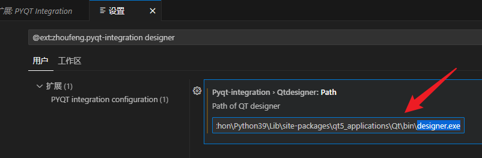
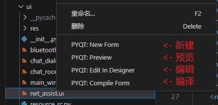
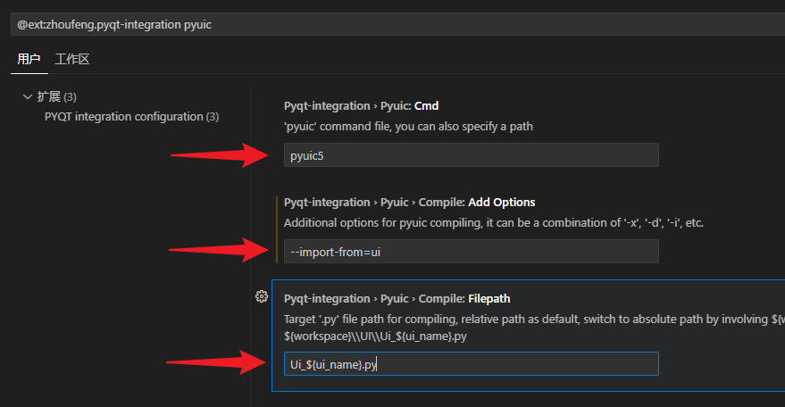
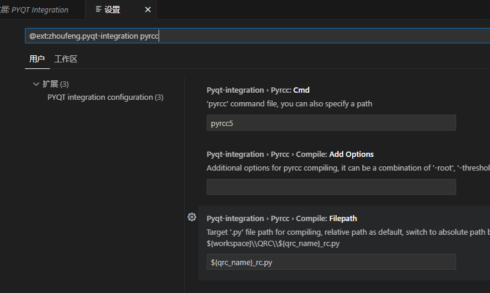
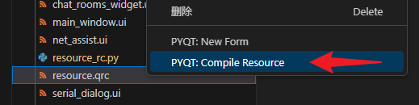
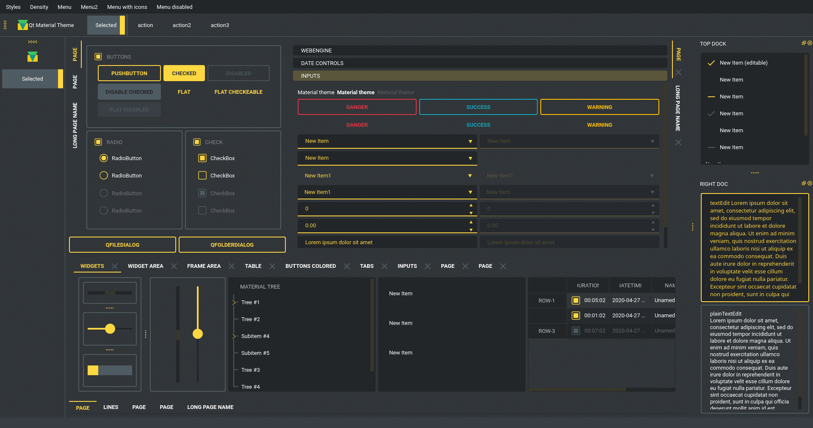

<!DOCTYPE lake>
<p data-lake-id="ua688f611" id="ua688f611"><span data-lake-id="ua866db8b" id="ua866db8b">PyQt5提供了一个可视化图形工具</span><code data-lake-id="u8af30656" id="u8af30656"><span data-lake-id="ud014e6e8" id="ud014e6e8">Qt Designer</span></code><span data-lake-id="u9738b0a5" id="u9738b0a5">，文件名为</span><code data-lake-id="u6112d25c" id="u6112d25c"><span data-lake-id="ubeb571e5" id="ubeb571e5">designer.exe</span></code><span data-lake-id="u9cacd615" id="u9cacd615">。如果在电脑上找不到，可以用如下命令进行安装：</span></p><span class="yuque-card-unsupported">[codeblock]</span><p data-lake-id="u8252a56b" id="u8252a56b"><span data-lake-id="u07e7a7f9" id="u07e7a7f9">安装完毕后，可在如下目录找到此工具软件：</span></p><p data-lake-id="u84a3572e" id="u84a3572e"><code data-lake-id="ub54041b9" id="ub54041b9"><span data-lake-id="u3040519c" id="u3040519c">%LOCALAPPDATA%\Programs\Python\Python311\Lib\site-packages\qt5_applications\Qt\bin\designer.exe</span></code></p><p data-lake-id="u1ca17737" id="u1ca17737"><span data-lake-id="uda2815c6" id="uda2815c6">​</span><br/></p><p data-lake-id="u3c2ca157" id="u3c2ca157"><span data-lake-id="uc81a8716" id="uc81a8716">注意：</span><code data-lake-id="ua01eb1db" id="ua01eb1db"><span data-lake-id="u3ccaf617" id="u3ccaf617">%LOCALAPPDATA%</span></code><span data-lake-id="ube47ccab" id="ube47ccab">通常代表</span><code data-lake-id="u844c5399" id="u844c5399"><span data-lake-id="uad0b356a" id="uad0b356a">C:\Users\你的用户名\AppData\Local\</span></code></p><h2 data-lake-id="W6QF7" id="W6QF7"><span data-lake-id="u143b722f" id="u143b722f">VSCode添加外部工具</span></h2><h3 data-lake-id="KRqiF" id="KRqiF"><span data-lake-id="ude49b3f4" id="ude49b3f4">QtDesigner</span></h3><p data-lake-id="u2acdcfdf" id="u2acdcfdf"><span data-lake-id="u93baa7bf" id="u93baa7bf">打开</span><code data-lake-id="ufb516784" id="ufb516784"><span data-lake-id="u04a29360" id="u04a29360">PYQT Integration</span></code><span data-lake-id="u81cd8b75" id="u81cd8b75">插件设置，搜索</span><code data-lake-id="ubaa19188" id="ubaa19188"><span data-lake-id="uf5cad841" id="uf5cad841">designer</span></code><span data-lake-id="u3d267b8a" id="u3d267b8a">，将自己本地的</span><code data-lake-id="u8bda31b5" id="u8bda31b5"><span data-lake-id="u06819835" id="u06819835">designer.exe</span></code><span data-lake-id="uf12bde85" id="uf12bde85">完整路径设置进去。</span></p><p data-lake-id="u6087579b" id="u6087579b"></p><blockquote class="lake-alert lake-alert-warning" data-lake-id="u4a7a6306" id="u4a7a6306"><p data-lake-id="uf0230dd6" id="uf0230dd6"><span data-lake-id="u63375b4d" id="u63375b4d">注意，如果找不到</span><code data-lake-id="u0594e1cb" id="u0594e1cb"><span data-lake-id="ud3c5b27c" id="ud3c5b27c">designer.exe</span></code><span data-lake-id="u9fe7ef46" id="u9fe7ef46">：</span></p><ol list="ub46453df"><li data-lake-id="u425f9334" fid="ue7d4193c" id="u425f9334"><span data-lake-id="u7ad1622a" id="u7ad1622a">Program路径要根据自己安装的PyQt5-tools路径设置（</span><code data-lake-id="u49c6b0b4" id="u49c6b0b4"><span data-lake-id="uc73b51e2" id="uc73b51e2">pip install PyQt5-tools</span></code><span data-lake-id="udc2d847e" id="udc2d847e">）</span></li><li data-lake-id="u2db2c43a" fid="ue7d4193c" id="u2db2c43a"><span data-lake-id="ufacdb69d" id="ufacdb69d">安装的PyQt5-tools路径的取决于安装Python时的路径（</span><code data-lake-id="u0c9fdf50" id="u0c9fdf50"><span data-lake-id="u7d8e9700" id="u7d8e9700">pip -V</span></code><span data-lake-id="u4c862383" id="u4c862383">可以看到路径）</span></li><li data-lake-id="u1639ee96" fid="ue7d4193c" id="u1639ee96"><span data-lake-id="u817fa3b9" id="u817fa3b9">如果用的是Python3.9.x，尝试用以下路径文件（先尝试在Win+R中能否打开）：</span></li></ol><p data-lake-id="u7bfdcfa4" id="u7bfdcfa4"><code data-lake-id="ua698937a" id="ua698937a"><span data-lake-id="ue4f88813" id="ue4f88813">%LOCALAPPDATA%\Programs\Python\Python39\Lib\site-packages\qt5_applications\Qt\bin\designer.exe</span></code></p><ol list="u642327d9" start="4"><li data-lake-id="u6ac46e3b" fid="u99b9decf" id="u6ac46e3b"><span data-lake-id="ufb43c8b6" id="ufb43c8b6">实在找不到，建议安装</span><code data-lake-id="u14bff2ed" id="u14bff2ed"><span data-lake-id="u7298005f" id="u7298005f">everything.exe</span></code><span data-lake-id="u9fdc3ee7" id="u9fdc3ee7">，全局搜索</span><code data-lake-id="ufdec73d4" id="ufdec73d4"><span data-lake-id="uc65ee64a" id="uc65ee64a">designer.exe</span></code><span data-lake-id="u5b102a2a" id="u5b102a2a">位置</span></li></ol></blockquote><p data-lake-id="u8f656d40" id="u8f656d40"><span data-lake-id="u930f3a7b" id="u930f3a7b">设置完成后，我们可以在</span><code data-lake-id="u67808144" id="u67808144"><span data-lake-id="uc757be4c" id="uc757be4c">.ui</span></code><span data-lake-id="u9780ee08" id="u9780ee08">文件右键进行如下操作：</span></p><p data-lake-id="udaee7299" id="udaee7299"></p><p data-lake-id="u3e875068" id="u3e875068"><span data-lake-id="u798f9c47" id="u798f9c47">也可以在任意目录右键新建ui文件</span></p><h3 data-lake-id="w6Jef" id="w6Jef"><span data-lake-id="uc56f88b4" id="uc56f88b4">PyUIC</span></h3><p data-lake-id="ua604d428" id="ua604d428"><span data-lake-id="ud6d16662" id="ud6d16662">打开设置，过滤pyuic，按照下图填写：</span></p><ul list="u78b05b2d"><li data-lake-id="u8e944951" fid="uf1843c67" id="u8e944951"><span data-lake-id="u62dd971a" id="u62dd971a">Cmd：</span><code data-lake-id="u7b04316b" id="u7b04316b"><span data-lake-id="ufe69ad4d" id="ufe69ad4d">pyuic5</span></code></li><li data-lake-id="ub86eac37" fid="uf1843c67" id="ub86eac37"><span data-lake-id="u5ebd62bc" id="u5ebd62bc">Add Options：</span><code data-lake-id="u84d32119" id="u84d32119"><span data-lake-id="u27adb153" id="u27adb153">--import-from=ui</span></code></li><li data-lake-id="uc0c2ef39" fid="uf1843c67" id="uc0c2ef39"><span data-lake-id="u30cfc53c" id="u30cfc53c">Filepath：</span><code data-lake-id="u3954cff9" id="u3954cff9"><span data-lake-id="u57e0ce5b" id="u57e0ce5b">Ui_${ui_name}.py</span></code></li></ul><p data-lake-id="u6b2a9d4a" id="u6b2a9d4a"></p><p data-lake-id="u0601c270" id="u0601c270"><span data-lake-id="u46b120e4" id="u46b120e4">这个配置是为了右键</span><code data-lake-id="ubda892a8" id="ubda892a8"><span data-lake-id="uc4453364" id="uc4453364">.ui</span></code><span data-lake-id="u1ac5099b" id="u1ac5099b">文件时，点击</span><code data-lake-id="u095dcb0a" id="u095dcb0a"><span data-lake-id="u7e8d39b1" id="u7e8d39b1">PYQT:Compile Form</span></code><span data-lake-id="ua7ed148a" id="ua7ed148a">时，能生成对应</span><code data-lake-id="u57e074b7" id="u57e074b7"><span data-lake-id="ub56dddf2" id="ub56dddf2">.py</span></code><span data-lake-id="ua88b2eae" id="ua88b2eae">文件</span></p><h3 data-lake-id="f4O8x" id="f4O8x"><span data-lake-id="ud284d21f" id="ud284d21f">PyRCC</span></h3><p data-lake-id="uad14be0a" id="uad14be0a"><span data-lake-id="u8fa3226a" id="u8fa3226a">参数设置：</span></p><p data-lake-id="uab1fdfcc" id="uab1fdfcc" style="text-indent: 2em"><code data-lake-id="ueebc8ade" id="ueebc8ade"><span data-lake-id="uc624a420" id="uc624a420">pyrcc5</span></code></p><p data-lake-id="u776774f4" id="u776774f4" style="text-indent: 2em"><code data-lake-id="u30761832" id="u30761832"><span data-lake-id="ufc0b6a47" id="ufc0b6a47">${qrc_name}_rc.py</span></code></p><p data-lake-id="u7bba6550" id="u7bba6550"><span data-lake-id="ucdcb6fef" id="ucdcb6fef">确保配置如下即可：</span></p><p data-lake-id="u3f9b724e" id="u3f9b724e"></p><p data-lake-id="u44bd71e1" id="u44bd71e1"><span data-lake-id="u2c1a334b" id="u2c1a334b">添加完成后，可在</span><code data-lake-id="u77bf44c7" id="u77bf44c7"><span data-lake-id="uc111abb0" id="uc111abb0">.qrc</span></code><span data-lake-id="u4f3f4b90" id="u4f3f4b90">文件右键点击</span><code data-lake-id="u60d3365d" id="u60d3365d"><span data-lake-id="u44248e13" id="u44248e13">PYQT: Compile Resource</span></code><span data-lake-id="u8b897fa5" id="u8b897fa5">，即可生成对应的</span><code data-lake-id="uee40a62b" id="uee40a62b"><span data-lake-id="u562ee9f6" id="u562ee9f6">.py</span></code><span data-lake-id="ua9215426" id="ua9215426">资源文件。</span></p><p data-lake-id="u2e893bca" id="u2e893bca"></p><p data-lake-id="u9980cec7" id="u9980cec7"><br/></p><h2 data-lake-id="LmAvC" id="LmAvC"><span data-lake-id="u7d89adcf" id="u7d89adcf">加载UI文件模板代码</span></h2><h3 data-lake-id="hMkOG" id="hMkOG"><span data-lake-id="u6e161bd3" id="u6e161bd3">QMainWindow</span></h3><p data-lake-id="u17fdb459" id="u17fdb459"><span data-lake-id="u2efdd0be" id="u2efdd0be">我们通过可视化工具</span><code data-lake-id="u5862786a" id="u5862786a"><span data-lake-id="u231ad0d4" id="u231ad0d4">QtDesigner</span></code><span data-lake-id="uce2b5772" id="uce2b5772">生成</span><code data-lake-id="u54b9b5f9" id="u54b9b5f9"><span data-lake-id="ueba3c2aa" id="ueba3c2aa">.ui</span></code><span data-lake-id="u16707e7c" id="u16707e7c">文件后，需要在代码中加载并显示。可参照</span><code data-lake-id="ub27b23ed" id="ub27b23ed"><span data-lake-id="ue5a61c50" id="ue5a61c50">PyUIC</span></code><a data-lake-id="u981a8da8" href="#VNtxP" id="u981a8da8"><span data-lake-id="u297e9d11" id="u297e9d11">部分教程</span></a><span data-lake-id="u54957cec" id="u54957cec">进行转换。</span></p><p data-lake-id="ued418faf" id="ued418faf"><span data-lake-id="uf0fc5b66" id="uf0fc5b66">​</span><br/></p><p data-lake-id="u0e6b9067" id="u0e6b9067"><span data-lake-id="ud0aebdcc" id="ud0aebdcc">使用</span><code data-lake-id="ua68a0287" id="ua68a0287"><span data-lake-id="u127afedf" id="u127afedf">xxx.ui</span></code><span data-lake-id="uf388d487" id="uf388d487">生成</span><code data-lake-id="u372c81d5" id="u372c81d5"><span data-lake-id="u3c93ed88" id="u3c93ed88">xxx.py</span></code><span data-lake-id="uab5e9171" id="uab5e9171">代码文件后，可使用如下代码进行加载。</span></p><p data-lake-id="ue1968521" id="ue1968521"><span data-lake-id="uf1d9b03b" id="uf1d9b03b">注意，本例的</span><code data-lake-id="u9c6cd5be" id="u9c6cd5be"><span data-lake-id="ue5ed4e7f" id="ue5ed4e7f">ui</span></code><span data-lake-id="u32a8433b" id="u32a8433b">相关文件都在</span><code data-lake-id="uf138b357" id="uf138b357"><span data-lake-id="u1e87e3c4" id="u1e87e3c4">ui</span></code><span data-lake-id="u19da48d8" id="u19da48d8">目录下，即加载的</span><code data-lake-id="u97a93cc1" id="u97a93cc1"><span data-lake-id="uf4562f94" id="uf4562f94">ui</span></code><span data-lake-id="ubedae32a" id="ubedae32a">包下的</span><code data-lake-id="ue9ebb60a" id="ue9ebb60a"><span data-lake-id="u65c4a216" id="u65c4a216">ui_main_window</span></code><span data-lake-id="u0fc22441" id="u0fc22441">模块</span></p><span class="yuque-card-unsupported">[codeblock]</span><p data-lake-id="u195e7058" id="u195e7058"><span data-lake-id="ua706a2fb" id="ua706a2fb">目录结构如下</span></p><p data-lake-id="u347258ff" id="u347258ff"></p><p data-lake-id="u1313e1d5" id="u1313e1d5"><br/></p><h3 data-lake-id="GpnRM" id="GpnRM"><span data-lake-id="u0ff4b8a0" id="u0ff4b8a0">QWidget</span></h3><span class="yuque-card-unsupported">[codeblock]</span><p data-lake-id="u9e2fb5a6" id="u9e2fb5a6"><br/></p><h3 data-lake-id="QKVye" id="QKVye"><span data-lake-id="u86af8655" id="u86af8655">QDialog</span></h3><span class="yuque-card-unsupported">[codeblock]</span><h2 data-lake-id="I97pz" id="I97pz"><span data-lake-id="u87a0d82f" id="u87a0d82f">常用知识点</span></h2><h3 data-lake-id="aHd1D" data-lake-index-type="2" id="aHd1D"><span data-lake-id="u2cc524b3" id="u2cc524b3">修改标题图标</span></h3><p data-lake-id="u2be605ab" id="u2be605ab"><span data-lake-id="u7ec69234" id="u7ec69234">图标生成网站：</span><a data-lake-id="ua59c4283" href="https://www.iconfont.cn/" id="ua59c4283" rel="noopener noreferrer" target="_blank"><span data-lake-id="u26c09cdd" id="u26c09cdd">https://www.iconfont.cn/</span></a></p><h3 data-lake-id="IZvjy" data-lake-index-type="2" id="IZvjy"><span data-lake-id="ufebd33a5" id="ufebd33a5">图片资源管理</span></h3><h3 data-lake-id="Dfm6W" data-lake-index-type="2" id="Dfm6W"><span data-lake-id="ua2e35493" id="ua2e35493">图片按钮</span></h3><span class="yuque-card-unsupported">[codeblock]</span><h3 data-lake-id="lOW2Y" data-lake-index-type="2" id="lOW2Y"><span data-lake-id="u29b88141" id="u29b88141">加载对话框</span></h3><h3 data-lake-id="GBQlM" data-lake-index-type="2" id="GBQlM"><span data-lake-id="ueb137444" id="ueb137444">动态加载</span><code data-lake-id="u353e958f" id="u353e958f"><span data-lake-id="ub287de11" id="ub287de11">Widget</span></code></h3><h3 data-lake-id="bXFSB" data-lake-index-type="2" id="bXFSB"><span data-lake-id="u4d867fff" id="u4d867fff">修改主题</span></h3><p data-lake-id="u452ca4be" id="u452ca4be"><code data-lake-id="u23ffbebf" id="u23ffbebf"><span data-lake-id="u0b1670a8" id="u0b1670a8">qt-material</span></code></p><p data-lake-id="ufc305614" id="ufc305614"><span data-lake-id="u02477717" id="u02477717">主题官网：</span><a data-lake-id="u58fac94d" href="https://github.com/UN-GCPDS/qt-material" id="u58fac94d" rel="noopener noreferrer" target="_blank"><span data-lake-id="u9b85add6" id="u9b85add6">https://github.com/UN-GCPDS/qt-material</span></a></p><p data-lake-id="u39a78ff0" id="u39a78ff0"><strong><span data-lake-id="u1dc79ddd" id="u1dc79ddd">使用方式：</span></strong></p><p data-lake-id="u587ae61b" id="u587ae61b"><span data-lake-id="u0457b4a4" id="u0457b4a4">安装：</span></p><span class="yuque-card-unsupported">[codeblock]</span><p data-lake-id="u5f548b9c" id="u5f548b9c"><span data-lake-id="u169f4cfa" id="u169f4cfa">代码：</span></p><span class="yuque-card-unsupported">[codeblock]</span><p data-lake-id="u0bc9bcf9" id="u0bc9bcf9"><span data-lake-id="u9217c69e" id="u9217c69e">效果：</span></p><p data-lake-id="u40c1efa4" id="u40c1efa4"></p><h2 data-lake-id="rO1my" id="rO1my"><span data-lake-id="u5f31225a" id="u5f31225a">其他注意事项</span></h2><h3 data-lake-id="iVhR6" id="iVhR6"><span data-lake-id="u197089ac" id="u197089ac">事件被多次触发</span></h3><p data-lake-id="u3ac518c0" id="u3ac518c0"><strong><span data-lake-id="ua058d576" id="ua058d576">问题描述：</span></strong></p><p data-lake-id="u15487061" id="u15487061"><span data-lake-id="ue3551c81" id="ue3551c81">如果自己给某个按钮或组件的信号设置槽函数，期待点击一次只触发一次，但是莫名被触发了多次。</span></p><p data-lake-id="u702fa5ea" id="u702fa5ea"><strong><span data-lake-id="uc5cd2747" id="uc5cd2747">​</span></strong><br/></p><p data-lake-id="ue699d55d" id="ue699d55d"><strong><span data-lake-id="u15d0b28b" id="u15d0b28b">原因分析：</span></strong></p><p data-lake-id="ufcfd4cbd" id="ufcfd4cbd"><span data-lake-id="u3e14d7bb" id="u3e14d7bb">参考文档介绍：</span><a class="yuque-card-link" href="https://doc.qt.io/qtforpython-6/PySide6/QtCore/QMetaObject.html#PySide6.QtCore.PySide6.QtCore.QMetaObject.connectSlotsByName" rel="noopener noreferrer" target="_blank">bookmarkInline：bookmarkInline</a></p><p data-lake-id="u7afc25b4" id="u7afc25b4"><br/></p><p data-lake-id="u0a8bf531" id="u0a8bf531"><span data-lake-id="u92bb833a" id="u92bb833a">原因很可能是因为槽函数命名问题。因为我们使用</span><code data-lake-id="uf9273db2" id="uf9273db2"><span data-lake-id="uaff15e65" id="uaff15e65">.ui</span></code><span data-lake-id="ue7c40b1b" id="ue7c40b1b">文件生成的</span><code data-lake-id="u6a0794bf" id="u6a0794bf"><span data-lake-id="uef79cb7e" id="uef79cb7e">.py</span></code><span data-lake-id="ue82a388b" id="ue82a388b">文件中，会执行一个如下的方法。帮我们根据组件的变量名绑定对应的槽函数：</span></p><span class="yuque-card-unsupported">[codeblock]</span><p data-lake-id="u13a3ca46" id="u13a3ca46"><span data-lake-id="u32a86212" id="u32a86212" style="color: rgb(51, 51, 51)">假设我们的对象有一个</span><code data-lake-id="uc6362907" id="uc6362907"><span data-lake-id="u01fe366f" id="u01fe366f" style="color: rgb(51, 51, 51)">QPushButton</span></code><span data-lake-id="uee5ce80a" id="uee5ce80a" style="color: rgb(51, 51, 51)">类型的子对象，对象名称为</span><code data-lake-id="u6d2096de" id="u6d2096de"><span data-lake-id="ud80c2c27" id="ud80c2c27" style="color: rgb(51, 51, 51)">button1</span></code><span data-lake-id="u84ea23a5" id="u84ea23a5" style="color: rgb(51, 51, 51)">。则自动</span><code data-lake-id="u5c3676a2" id="u5c3676a2"><span data-lake-id="u59d2434f" id="u59d2434f" style="color: rgb(51, 51, 51)">connect</span></code><span data-lake-id="ue776aa33" id="ue776aa33" style="color: rgb(51, 51, 51)">且捕获按钮的</span><code data-lake-id="u91291d53" id="u91291d53"><span data-lake-id="u72dce627" id="u72dce627" style="color: rgb(51, 51, 51)">clicked()</span></code><span data-lake-id="u99d2f1e0" id="u99d2f1e0" style="color: rgb(51, 51, 51)">信号的槽是:</span></p><span class="yuque-card-unsupported">[codeblock]</span><p data-lake-id="u835aa1b8" id="u835aa1b8"><span data-lake-id="u19abaa65" id="u19abaa65" style="color: rgb(51, 51, 51)">如果对象本身有一个通过</span><code data-lake-id="ud4614292" id="ud4614292"><a data-lake-id="u7d7ae953" href="https://doc.qt.io/qtforpython-6/PySide6/QtCore/QObject.html#PySide6.QtCore.PySide6.QtCore.QObject.setObjectName" id="u7d7ae953" rel="noopener noreferrer" target="_blank"><span data-lake-id="u4a3f71bf" id="u4a3f71bf" style="color: rgb(51, 51, 51)">setObjectName()</span></a></code><span data-lake-id="u7a320a16" id="u7a320a16" style="color: rgb(51, 51, 51)">设置的对象名称，它自己的信号也连接到它对应的槽。</span></p><p data-lake-id="u37fe2a20" id="u37fe2a20"><strong><span data-lake-id="u9fece762" id="u9fece762" style="color: rgb(51, 51, 51)">​</span></strong><br/></p><p data-lake-id="u57ba2951" id="u57ba2951"><strong><span data-lake-id="u5c92f929" id="u5c92f929" style="color: rgb(51, 51, 51)">解决办法：</span></strong></p><p data-lake-id="u2c7b2aae" id="u2c7b2aae"><span class="lake-fontsize-10" data-lake-id="ua8a35995" id="ua8a35995" style="color: rgb(51, 51, 51)">换一个槽函数名称，或是按照官方规则直接声明槽函数</span></p><p data-lake-id="udaf166ac" id="udaf166ac"><br/></p>